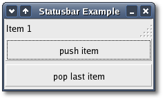

| Xfce
Foundation Classes |
|||
| « Main Page | Index | |||
StatusbarsStatusbars are simple widgets used to display a text message. They keep a stack of the messages pushed onto them, so that popping the current message will re-display the previous text message. In order to allow different parts of an application to use the same statusbar to display messages, the statusbar widget issues Context Identifiers which are used to identify different 'users'. The message on top of the stack is the one displayed, no matter what context it is in. Messages are stacked in last-in-first-out order, not context identifier order. A statusbar is created with the constructor: Statusbar();unsigned
int get_context_id(const
String&
context_description) const;unsigned
int push(const String& text, unsigned int context_id = 0);The first, push(), is used to add a new message to the statusbar. It returns a message identifier, which can be passed later to the function remove() to remove the message with the given message and context identifiers from the statusbar's stack. The pop() method removes the message highest in the stack with the given context identifier. In addition to messages, statusbars may also display a resize grip, which can be dragged with the mouse to resize the top level window containing the statusbar, similar to dragging the window frame. The following methods control the display of the resize grip. void
set_has_resize_grip(bool setting); Statusbar ExampleThe following example creates a statusbar and two buttons, one for pushing items onto the statusbar, and one for popping the last item off.The header file for the Statusbar example is <statusbar.hh>: #include <xfc/main.hh>and the source file is <statusbar.cc>: #include "statusbar.hh"Compiling StatusbarIf you compiled and installed XFC yourself, you will find the source code for Statusbar in the <examples/howto/statusbar> source directory along with a Makefile. If XFC came pre-installed, or you installed it from an RPM package, you will find the source code in the </usr/share/doc/xfcui-X.X/examples/howto/statusbar> subdirectory. In this case you will have to create the Makefile yourself (replace X.X with the version number of the libXFCui library you have installed).To create a Makefile for Statusbar, add the following lines to a new text file and save it using the name "Makefile": CC = g++If you cut and paste these lines make sure the whitespace before $(CC) and rm is a tab character. When The source code for Status Example can be found in the <examples/howto/statusbar> subdirectory along with a Makefile. If you compile and run this program you will see the following window appear: 
|